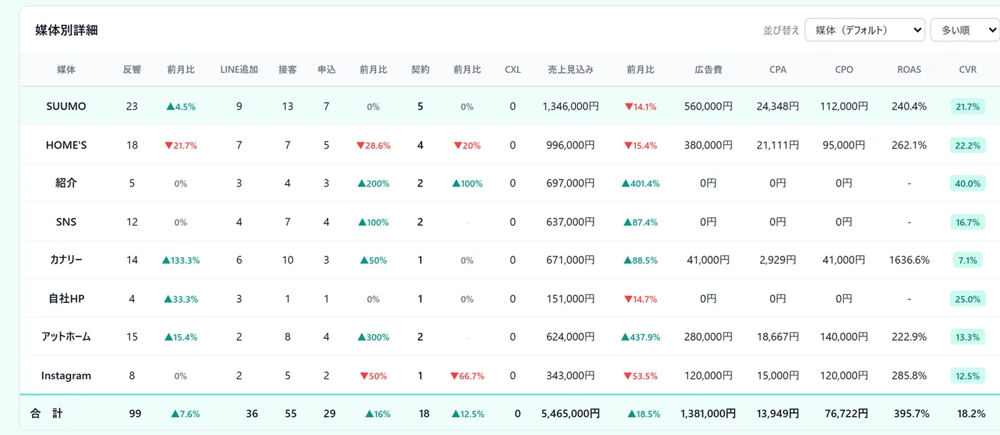

こんな困りごとに
- どの媒体が申込につながっているのか、感覚でしか分からない
- 広告費をかけている媒体の効果を、数字で説明できない
- 月ごとの反響の増減を、すぐに振り返れない
この機能でできること
- 媒体ごとの反響件数・前月比・CVR（反響のうち契約になった割合）を表示
- 反響・接客・申込・売上見込み・広告費・CPA（1件あたりの獲得単価）を横並びで比較
- 数字を押して、その件数に入っているお客様をその場で確認
メニューの場所左メニュー「反響分析」
使い方（3ステップ）
-
1
今月の合計を見る
左メニューの「反響分析」を開くと、上のカードに広告費用合計・売上見込み合計・総反響数・接客数・申込数が出ます。下の月次トレンドのグラフでは、反響数・申込数・売上の推移も確認できます。
-
2
媒体ごとに比べる
媒体別詳細の表で、反響・接客・申込・売上見込み・広告費・CPAなどを横に並べて比べます。列の見出しを押すと並び替えられ、「CPA」「ROAS」などの用語は、見出しにマウスを乗せると計算式と意味が出ます。

-
3
数字の中身を確かめる
表の数字を押すと、その数字に入っているお客様の一覧が出ます（反響・LINE追加・接客・申込・契約・キャンセルの列と、合計の行で使えます）。一覧の「反響管理表で開く」から、その月の反響管理表に移れます。
よくある質問
広告費はどこで入力しますか？
反響分析の画面から入力・修正できます。経理・PLの広告費（媒体別）とは自動で相互に反映されるので、どちらか一方に入れれば両方に入り、二重に計上されません。
反響の数字は手で入力するのですか？
反響管理表や、フォーム・メールの自動取込の実績から自動で積み上がります。「＋ 新規入力」から直接入れることもできます。